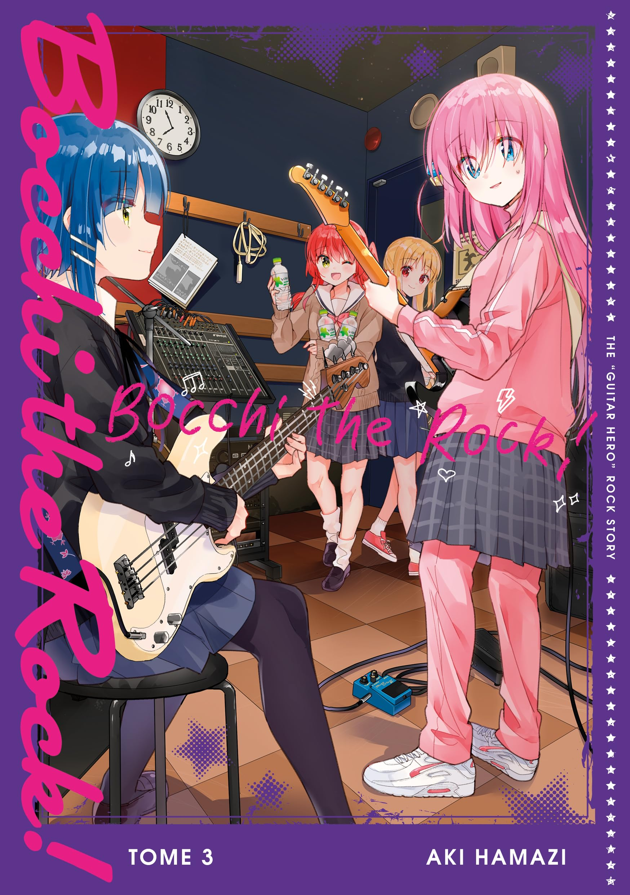

Bocchi The Rock - Tome 3
Résumé
T'as du mal à parler aux gens ? Alors fais du rock !!!
Le plus hype des mangas de musique du moment, pour toutes les personnes solitaires !!!
Hitori Gotô, alias "Bocchi", est une jeune fille solitaire qui adore la guitare.
Elle se contentait d'en jouer seule chez elle jusqu'à ce qu'une succession d'événements
la fasse rencontrer Nijika Ijichi, qui l'invite dans son groupe de rock, "Les Attaches".
Mais Hitori pourra-t-elle vraiment se débrouiller dans un groupe,
elle qui n'a jamais osé jouer devant les autres jusqu'à présent ?!
Prix : 7.95€